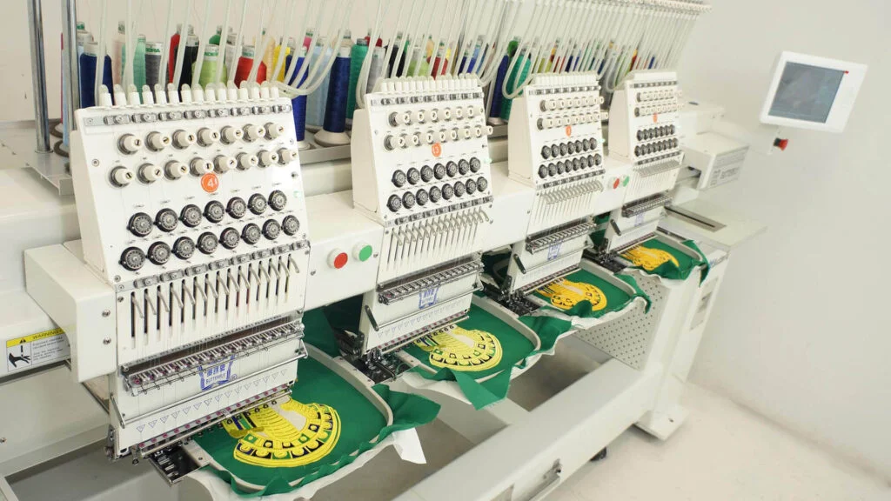

Benefits of Custom Embroidery Patches
Introduction
Custom patches have grown in popularity over the years, becoming a go-to solution for adding personality, branding, or identity to uniforms, bags, jackets, and more. Whether you’re looking to represent your organization, show off your creative side, or create a cohesive look for a team, custom patches offer a versatile and unique way to make a statement. But with so many types of patches available, how do you choose the right one for your needs? Today patches specializes in creating high-quality custom patches that can help you achieve your goals.
In this article, we will explore the various benefits of custom embroidery patches, their design flexibility, material options, and numerous applications. By the end, you'll have a comprehensive understanding of why custom patches are an excellent choice for individuals, organizations, and businesses alike.

Design and Customization Options
The design possibilities for custom embroidery patches are nearly endless. Whether you're looking to showcase your business logo, commemorate a special event, or express your unique personality, custom patches can be tailored to suit your exact needs.
- Wide Range of Design Possibilities: Custom patches allow you to get as creative as you like. Whether you need a simple text-based patch or a highly intricate design with vibrant colors, embroidery patches can be customized to reflect your vision.
- Personalized to Specific Needs: Patches can be personalized for various purposes, from corporate branding to personal keepsakes.
- Incorporating Logos, Text, and Intricate Designs: One of the standout benefits of embroidery patches is their ability to faithfully replicate logos, detailed images, or text.
Materials and Quality
Custom embroidery patches are known for their high durability, and the quality of these patches largely depends on the materials used. Here are some of the most common materials:
- Twill, Felt, Chenille, and Other Materials: The most frequently used material for patches is twill, which is both durable and versatile.
- Durability and Quality of Embroidered Patches: Embroidered patches are known for their resilience. The stitching process binds the threads tightly together, ensuring the patch withstands wear and tear.
- Proper Care for Longevity: With proper care, custom embroidered patches can last for years without losing their color or structural integrity.
Applications and Uses
Custom patches can be applied to a wide variety of products and serve numerous purposes across different sectors. Here are some of the most common applications:
- Clothing, Bags, Hats, and Uniforms: Custom patches are often sewn or ironed onto clothing and accessories such as jackets, shirts, bags, and hats.
- Enhancing Brand Identity and Promoting Products/Services: For businesses, custom patches offer a cost-effective way to enhance brand visibility.
- Collectors' Items and Memorabilia: Custom patches are often used to commemorate events, achievements, or special moments.
Benefits of Custom Embroidery Patches
- Cost-Effectiveness: Compared to other branding or promotional methods, custom embroidery patches are highly cost-effective.
- Durability and Longevity: Unlike some other branding methods that may fade or peel, embroidered patches are made to last.
- Versatility of Design and Application: Whether you need patches for uniforms, promotional giveaways, or personal items, custom patches can meet virtually any need.
- Enhanced Brand Recognition and Customer Engagement: Custom patches serve as a great tool for enhancing brand recognition and sparking conversations.
Conclusion
Custom embroidery patches offer a wide array of benefits for individuals and businesses. They provide a cost-effective, durable, and versatile method for promoting brands, commemorating events, or adding a personal touch to clothing and accessories.
If you're considering using custom embroidery patches for your next project, Today patches can guide you through the design and production process.